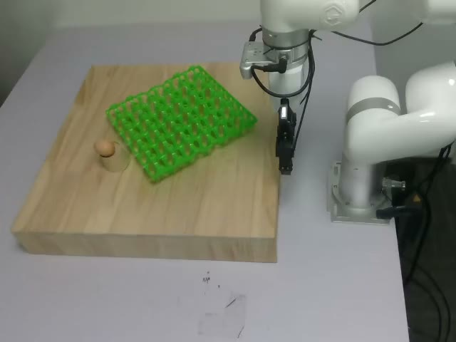

VeriGen
Generates video and touch from a first frame and an instruction


World model
Video expertTactile expert
joint attentionRobots learn contact-rich skills from visuo-tactile demonstrations, but collecting them on real hardware is slow and costly, and simulators rarely capture realistic contact. VeriTouch turns a world model into a source of such data: VeriGen generates dual-view video and bilateral touch from two first frames and an instruction, VeriEval keeps only the rollouts whose vision and touch are physically consistent, and VeriIDM recovers the robot's actions from the video. Mixed with real demonstrations, the verified synthetic data improves all four policies we test on five real-world tasks, and scaling it up more than doubles success without collecting more real data.
VeriGen generates six rollouts from two first frames. VeriEval rejects four of them, VeriIDM labels the two that pass with actions, and they join real demonstrations to train policies. Hover a rollout or a check to see why it was kept or dropped.
Generates video and touch from a first frame and an instruction

Four checks in order; a rollout is dropped at its first failure
Recovers an action for every frame from both camera views
Trained on real and verified synthetic demos, mixed 1 : 1
Four policies on five contact-rich tasks, tested on unseen layouts. Each policy is trained on the same real demonstrations, with and without verified synthetic ones.
N0-VTLA with the real demonstrations fixed and more verified synthetic ones added.
Same robot, same task, same starting layout. N0-VTLA trained on real demonstrations only (left) vs. with VeriTouch data (right).
Held-out episodes from the same first frame and instruction. Both cameras and both fingertips play in sync; drag the divider to compare the real recording with VeriGen.
N0-VTLA trained with the same candidate pool, data size and settings. Only the filter, or the touch input, changes.
VeriIDM recovers the end-effector pose and gripper closure for every frame from the two camera views. Each method's actions were replayed on the real robot from the same starting scene, on 10 held-out real trajectories per task.
@misc{veritouch2027,
title = {VeriTouch: Verified Visuo-Tactile World Models that Improve Robot Policy Learning},
author = {Wang, Shuxun and Jiang, Xiaonan and Wang, Zhaoyu and Chu, Ziyuan and Yue, Xihang and Liu, Pengfei and Zhu, Haodong and Liu, Shiqi and Zheng, Mingzhi and Su, Liang and Zhu, Linchao},
year = {2027}
}